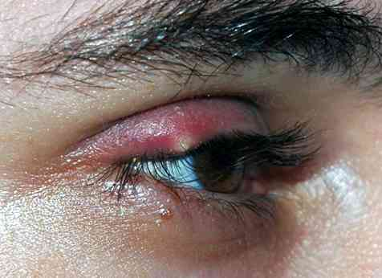

Orgelet
Spécialité : infectieux / ophtalmologie / pédiatrie /
Points importants
-
Localisation sur la marge palpébrale :
- infection pilo-sébacée de la base du cil
- pustule visible à la base d'un cil
- Staphylocoque aureus le plus souvent
- N'affecte pas l'oeil ou la surface oculaire
- L'orgelet est septique
Présentation clinique / CIMU
SIGNES FONCTIONNELS
- Gêne plus que douleur
- Parfois écoulement de pus, sécrétions conjonctivales réactionnelles
- Œdème et inflammation palpébrale localisée
- Peut être multiple : signe de possible immunodéficience
- Localisation possible sur les 4 paupières
- L'oedème de la paupière peut être responsable d'un astigmatisme et d'une vision trouble
CONTEXTE
Terrain
- Enfant, adolescent ou adulte jeune
Antécédents
- Orgelet
- Dysfonctionnement des glandes de Meibomius
- Blépharite
- Rosacée
EXAMEN CLINIQUE
 _91
- Examen des 4 paupières
CIMU
-
Tri 5
Diagnostic étiologique
- Idiopathique
Diagnostic différentiel
- Chalazion
- Il y a de rares cas publiés où les orgelets à répétitions sont associés à un déficit spécifique en IgM
- Il y a des cas décrits où un orgelet est responsable d'une cellulite préseptal
Traitement
Traitement ambulatoire
- Aucun aux urgences
- Cf. ordonnance de sortie
Devenir / orientation
CRITERES DE SORTIE
- Tous les patients
ORDONNANCE DE SORTIE
-
Gel ophtalmique à 1% d'acide fusidique (Fucithalmic) (alternative : rifamycine pommade ophtalmique) :
- une application x 3/j, pendant une semaine entre la paupière et l'oeil et en massage de paupière
- Antalgique : paracétamol
RECOMMANDATIONS DE SORTIE
- Consulter un ophtalmologiste si persistance après 7 jours de traitement en particulier pour discuter une incision et un drainage de l'abcès
- Eviter les cosmétiques pendant la phase aiguë
Mécanisme / description
- L'orgelet résulte d'une infection d'une glande sébacée, le plus souvent par des staphylocoques aureus
- Le traitement consiste en une antibiothérapie locale courte
- L'orgelet n'est pas contagieux
- Il peut aussi prendre le nom de Compère-Loriot et d'Hordéole (Hordeolum)
Bibliographie
- Serge Morax , Jean-Paul Adenis. Pathologie orbito-palpébrale. Société française d'ophtalmologie, Rapport annuel. 1998 ed Masson, Paris.
Auteur(s) : Jean-Louis BOURGES